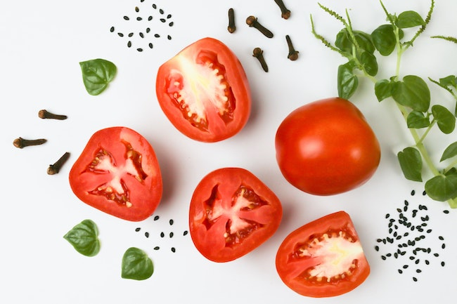
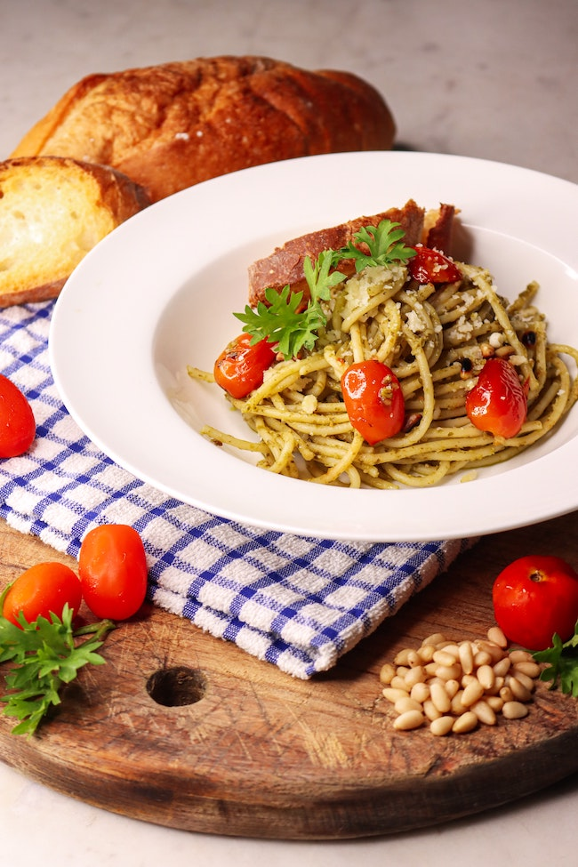

Ce plat de pâtes rapide et délicieux est le moyen idéal d'utiliser les richesses estivales de basilic et de tomates !
Pas la main verte ? Pas de panique ! Réalisez ce plat de pâtes classique en un rien de temps grâce à un pot de pesto préparé.


Variante : Pas le temps ou pas de basilic frais ? Utilisez plutôt un pot de 170 g de pesto préparé.